About the paper
Pedestrian detection is fundamental to autonomous driving, robotics, and surveillance. Despite progress in deep learning, reliable identification remains challenging due to occlusions, cluttered backgrounds, and degraded visibility. While multispectral detection—combining visible and thermal sensors—mitigates poor visibility, the challenge of camouflaged pedestrians remains largely unexplored. Existing Camouflaged Object Detection (COD) benchmarks focus on biological species, leaving a gap in safety-critical human detection where targets blend into their surroundings. To address this, we introduce Camo-M3FD, a novel benchmark for cross-spectral camouflaged pedestrian detection, consisting of registered visible-thermal image pairs. The dataset is curated using quantitative metrics to ensure high foreground-background similarity. We provide high-quality pixel-level masks and establish a standardized evaluation framework using state-of-the-art COD models. Our results demonstrate that while thermal signals provide indispensable localization cues, multispectral fusion is essential for refining structural details. Camo-M3FD serves as a foundational resource for developing robust, safety-critical detection systems. The dataset is available on GitHub: https://cod-espol.github.io/Camo-M3FD/ .
| Dataset | Source | Year | Scope | Type of images | # images |
|---|---|---|---|---|---|
| Chameleon [29] | - | 2018 | Animal | RGB | 76 |
| CAMO [21, 39] | CVIU | 2019 | Animal & others | RGB | 1,250 |
| COD10K [11, 12] | CVPR | 2020 | Animal & others | RGB | 10,000 |
| NC4K [25] | CVPR | 2021 | Animal & others | RGB | 4,121 |
| Camo-M3FD (Ours) | CVPR | 2026 | Pedestrian | RGB + Thermal | 614 |
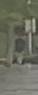
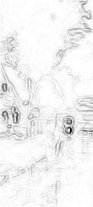
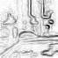
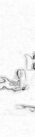
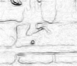
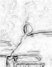
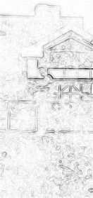
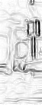
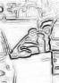
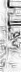
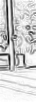
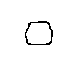
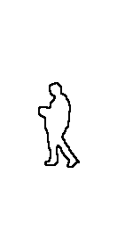
| Technique | Input | Sα ↑ | Fβw ↑ | M ↓ | Eφadp ↑ | Eφmean ↑ | Eφmax ↑ | Fβadp ↑ | Fβmean ↑ | Fβmax ↑ |
|---|---|---|---|---|---|---|---|---|---|---|
| BASNet [28] | Vis | 0.6239 | 0.2902 | 0.0032 | 0.6972 | 0.7183 | 0.8042 | 0.2879 | 0.3057 | 0.3137 |
| Th | 0.7051 | 0.4161 | 0.0028 | 0.7293 | 0.7822 | 0.8078 | 0.3762 | 0.4358 | 0.4571 | |
| SINet-v2 [12] | Vis | 0.6275 | 0.2693 | 0.0037 | 0.6039 | 0.7080 | 0.7227 | 0.2244 | 0.2872 | 0.3033 |
| Th | 0.6927 | 0.4072 | 0.0034 | 0.6450 | 0.7593 | 0.7949 | 0.3428 | 0.4244 | 0.4424 | |
| BGNet [4] | Vis | 0.6745 | 0.3922 | 0.0500 | 0.7594 | 0.7687 | 0.8142 | 0.3576 | 0.4124 | 0.4255 |
| Th | 0.7196 | 0.4699 | 0.0106 | 0.7664 | 0.8306 | 0.8539 | 0.4315 | 0.4865 | 0.4963 | |
| C2F-Net [3] | Vis | 0.5137 | 0.0432 | 0.0811 | 0.4804 | 0.6079 | 0.7333 | 0.1433 | 0.2155 | 0.2554 |
| Th | 0.5244 | 0.0522 | 0.0663 | 0.5122 | 0.6432 | 0.7656 | 0.2064 | 0.2882 | 0.3437 | |
| OCENet [23] | Vis | 0.5994 | 0.2357 | 0.0037 | 0.6680 | 0.7975 | 0.8201 | 0.2240 | 0.2546 | 0.2632 |
| Th | 0.7277 | 0.4884 | 0.0037 | 0.7122 | 0.8152 | 0.8666 | 0.4253 | 0.4998 | 0.5403 | |
| EAMNet [30] | Vis | 0.5227 | 0.0494 | 0.0160 | 0.4048 | 0.6141 | 0.8109 | 0.0998 | 0.1752 | 0.2352 |
| Th | 0.5047 | 0.0333 | 0.0506 | 0.4946 | 0.6458 | 0.8091 | 0.1836 | 0.2622 | 0.3799 | |
| DGNet [19] | Vis | 0.6438 | 0.3109 | 0.0039 | 0.6720 | 0.7598 | 0.7739 | 0.2759 | 0.3235 | 0.3377 |
| Th | 0.6898 | 0.4073 | 0.0052 | 0.6765 | 0.7928 | 0.8227 | 0.3586 | 0.4244 | 0.4403 | |
| HitNet [17] | Vis | 0.5659 | 0.1593 | 0.0030 | 0.7333 | 0.5685 | 0.7353 | 0.1815 | 0.1721 | 0.1809 |
| Th | 0.6682 | 0.3622 | 0.0029 | 0.7694 | 0.7466 | 0.7778 | 0.3910 | 0.3800 | 0.3919 | |
| PCNet [40] | Vis | 0.6512 | 0.3227 | 0.0034 | 0.5048 | 0.7639 | 0.8069 | 0.1688 | 0.3464 | 0.3552 |
| Th | 0.7034 | 0.4260 | 0.0030 | 0.6187 | 0.8280 | 0.8428 | 0.2674 | 0.4504 | 0.4572 | |
| CTF-Net [41] | Vis | 0.5077 | 0.0525 | 0.0755 | 0.4201 | 0.5912 | 0.7296 | 0.1322 | 0.2449 | 0.3146 |
| Th | 0.6532 | 0.2955 | 0.0116 | 0.4178 | 0.7515 | 0.8073 | 0.1409 | 0.4310 | 0.4794 | |
| AVNet [33] | Vis | 0.6669 | 0.4035 | 0.0029 | 0.8294 | 0.8164 | 0.8287 | 0.3923 | 0.3985 | 0.4068 |
| Th | 0.7289 | 0.5066 | 0.0026 | 0.7989 | 0.8075 | 0.8242 | 0.4831 | 0.4926 | 0.5113 | |
| Vis+Th | 0.7318 | 0.5301 | 0.0030 | 0.8167 | 0.8287 | 0.8617 | 0.5051 | 0.5139 | 0.5362 |
Paper
BibTeX
If you use this dataset, please cite us,
@article{velesaca2026camoM3FD,
author = {},
title = {Camo-M3FD: A New Benchmark Dataset for Cross-Spectral Camouflaged Pedestrian Detection},
journal = {},
doi = {}
}